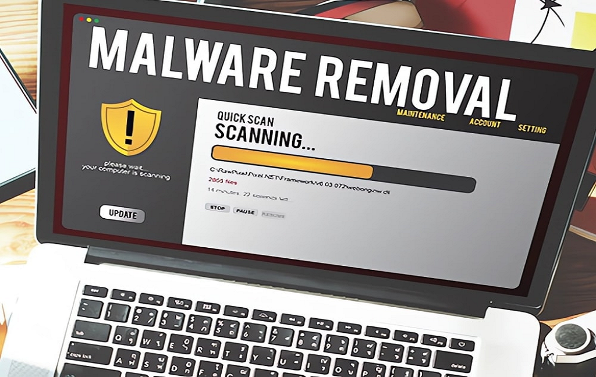

Service Details
Our service list is designed to help you get the most out of your day, from home repairs to personally visit, all we have you covered. We provide a variety of services that can be customized to fit your needs. We want to help you make the most of your time, so we offer a variety of services that can be tailored to fit your schedule. Our team of experts are here to help with whatever you need, big or small. We're always adding new services, so be sure to check back often!
PC Corner
PC Corner is your go-to destination for all things computers and technology. We provide high-quality computer sales, genuine spare parts, and expert repair services. From software installation and upgrades to network setup and virus removal, we ensure your devices run smoothly. Our skilled team is dedicated to delivering reliable solutions and personalized support for every customer. At PC Corner, your tech needs are our top priority.

Virus & Spyware Removal
In today’s connected world, viruses, spyware, ransomware, and other forms of malware pose serious threats to your personal data, business information, and overall computer performance. At PC Corner, we offer specialized Virus and Spyware Removal Services that protect your systems from harmful infections and restore them to full health.
Our certified technicians are trained to identify, remove, and prevent malicious programs that can compromise your computer’s performance, privacy, and security. Whether you’re dealing with slow performance, strange pop-ups, data loss, or complete system crashes, PC Corner provides fast, safe, and thorough virus removal solutions for all types of devices — desktops, laptops, and servers.
Understanding the Threat: What Are Viruses and Spyware?
Viruses are malicious programs that attach themselves to legitimate files or software, spreading through downloads, email attachments, or removable drives. They can corrupt data, damage files, or even disable your operating system. Spyware secretly monitors your activity, collects sensitive information such as passwords or financial data, and sends it to hackers. Ransomware encrypts your files and demands payment for their release. Adware displays intrusive advertisements and slows down your system. Trojan Horses, Worms, and Rootkits disguise themselves as safe files while opening backdoors for hackers to exploit your system.
If left unchecked, these infections can lead to data theft, identity fraud, system corruption, or permanent data loss.
Common Symptoms of Virus or Spyware Infection
If you notice any of the following signs, your system may already be infected:
- Slow startup and reduced performance.
- Frequent system crashes or error messages.
- Pop-up ads and unwanted browser redirects.
- Disabled antivirus or firewall.
- Unknown programs running in the background.
- Unusual hard drive activity (constant noise or blinking light).
- Files disappearing or becoming corrupted.
- Unauthorized access to email or social media accounts.
The sooner you act, the better your chances of recovering data and preventing further damage.
Our Comprehensive Virus & Spyware Removal Process
At PC Corner, we don’t just clean your system — we restore, secure, and optimize it for long-term protection.
Initial Diagnosis and System Scan: Our technicians begin by running an in-depth system diagnosis using advanced malware detection tools. We identify infections, corrupted files, registry issues, and hidden threats that may be compromising performance.
Data Backup and Protection: Before removal, we safely back up your important files, documents, and media to ensure no data is lost during the cleaning process.
Manual and Automated Malware Removal: We use a combination of automated security software and manual removal techniques to eliminate all types of malware, including viruses, spyware, trojans, and rootkits. This ensures even deeply hidden threats are completely removed.
Registry Repair and System Restoration: After removing infections, we repair damaged system files, restore your registry, and fix configuration errors to ensure system stability.
Antivirus Installation and Security Setup: To prevent future attacks, we install and configure trusted antivirus and anti-spyware software. We also update your system’s security patches and firewall settings for real-time protection.
System Optimization: We remove unnecessary temporary files, optimize startup programs, and fine-tune your operating system for better performance and faster boot times.
Final Testing and Customer Review: After the cleaning process, we perform a comprehensive system test to verify that your computer is running smoothly, safely, and efficiently.
Our Expertise Covers
- Virus and Malware Removal.
- Spyware and Adware Elimination.
- Ransomware and Rootkit Cleanup.
- Trojan and Worm Detection.
- Browser Hijacker Removal.
- Fake Antivirus & Phishing Software Cleanup.
- Email Malware and Spam Protection.
- OS-Level Infection Recovery.
We work on all major operating systems including Windows, macOS, and Linux, as well as on corporate networks and business servers.
Preventive Measures and Security Recommendations
Once your system is cleaned, we provide expert guidance on how to keep your computer protected in the future:
- Install and regularly update antivirus software.
- Enable automatic Windows and security updates.
- Avoid suspicious downloads and email attachments.
- Use strong, unique passwords and change them regularly.
- Backup important files periodically.
- Enable firewalls and browser protection features.
- Use two-factor authentication for sensitive accounts.
We also offer ongoing maintenance plans and antivirus subscription renewals for continuous protection.
Why Choose PC Corner for Virus & Spyware Removal?
- Certified Technicians: Experienced in malware analysis, removal, and system recovery.
- Complete Disinfection: We ensure all traces of malware are removed, not just quarantined.
- Data Safety First: We protect your data during the cleaning process.
- Quick Turnaround: Same-day service available for most cases.
- Affordable Pricing: Transparent costs with no hidden fees.
- Customized Solutions: Home, office, and enterprise-level protection plans.
- After-Service Support: Free consultation and system health check after cleaning.
- Trusted Software: We use only reliable, licensed antivirus and malware removal tools.
Who Can Benefit From Our Services
- Home Users: Protect your personal data, photos, and online accounts from hackers.
- Students and Professionals: Keep your laptops clean and safe for online learning and work.
- Businesses and Offices: Maintain network integrity and protect client data from breaches.
- Institutions and Organizations: Secure multiple systems from phishing, ransomware, and malware attacks.
Our Commitment to Security
At PC Corner, your digital safety is our top priority. We understand how valuable your data and privacy are. Our virus and spyware removal services are designed not only to fix the problem but to fortify your system against future threats.
We stay updated with the latest cybersecurity trends, malware behaviors, and defense technologies to ensure that our customers receive the most advanced protection available. Whether you’re facing a single infection or a full-scale network attack, our team is equipped to respond quickly and effectively.
Stay Protected with PC Corner
Don’t let viruses or spyware disrupt your work, steal your data, or slow down your computer. Trust PC Corner to detect, remove, and prevent malware threats while keeping your system optimized for maximum performance.
We deliver peace of mind, safety, and reliability—so you can focus on what matters most without worrying about security breaches.
PC Corner – Your trusted partner in computer protection, virus removal, and digital security.